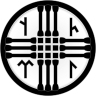

Türk Mitolojisi Nedir, Nelerden Oluşur?
Türk mitolojisi, tarihi Türk halklarının inanmış oldukları mitolojik bütüne verilen isimdir. Eski efsaneler, Türk halklarının eski ortak inancı Tengricilikten ögeler taşımaktan ziyade sosyal ve kültürel temalarla doludur. Bunların bazıları sonradan İslâmî ögeler ile değiştirilmiştir. Dünyanın en eski edebi belgelerinden biri olarak geçen Dede Korkut destanlarının orijinal yapıtları, Vatikan ve Dresden kütüphanelerinde bulunmaktadır. Ege ve Anadolu Uygarlığı mitolojisi ile benzerlikler taşımaktadır.
Türk mitolojisi, birçok araştırmacıya göre aynı Tengricilik'te de olduğu gibi tektanrıcı bir temelden, zamanla çoktanrıcı bir biçime doğru gelişmiştir. Ayrıca tarihi Türk halklarının temasa geçtikleri Zerdüştlük, Mani dini ve Budizm de Türkler'in mitolojisinden izler devralmıştır. Bu yüzden genel bir tanım olan Türk mitolojisine, inançtaki farklı unsurlar göz önünde tutulursa "Türk Mitolojileri" demek daha doğru olabilir.
Tengricilik

Tengricilik, Göktengri inancı veya Göktanrı inancı, Türk ve Moğol halklarında, şimdiki inanç sistemlerine katılmadan önceki yaygın inancıdır. Tengri'ye ibâdet etmenin yanında Animizm, Totemlik bu inancın ana hatlarını oluşturmaktadır. Tengri, bugünkü Türkçedeki Tanrı kelimesinin eski söyleniş şeklidir.
Bu inanca göre Gök'ün yüce ruhu Tengri'ydi. Kişiler kendilerini gök ata Tengri, toprak ana Ötüken ve insanları koruyan atalarının ruhları arasında güven içinde hissedip onlara ve diğer doğa ruhlarına dua ederlerdi. Büyük dağların, ağaçların ve kimi göllerin güçlü ruhları barındırdıklarına inanarak dualarını kimileyin bu cisimlere yöneltirlerse de bu cisimler tanrı kabul edilmezdi. Sadece onun yeryüzündeki varlığının bir göstergesiydi. Göğün ve yer altının "yedi" katı olduğuna, her katta çeşitli ruhların var olduğuna inanılırdı. Türkler doğaya, ruhlara saygılı davranıp belli kurallara uyarak dünyalarını dengede tutmaları ile kişisel güçlerinin doruğuna varıp dışarıya yansıdığına inanırlardı. Eğer bu denge, kötü ruhların saldırısı veya bir felaketten dolayı bozulursa bir kamın yardımı ya da Tengri'ye verilen bir adak ile yeniden düzene sokulması gerektiğine inanılırdı
Bu inancın kalıntılarını günümüzde Moğollarda (Lamaizmle birleşmiş şekilde) ve kimi hâlâ doğaya bağlı göçebe yaşam tarzı sürdüren Türk halklarında, mesela Altay Türkleri, Çuvaşlar (Vattisen Yalı) ve Sahalarda; ayrıca da Finlandiya ve Macaristan'da bulmak mümkündür. Ancak Tengriciliği çoktan bırakmış halklarda da bu inancın birçok parçası İslâm, Hristiyanlık, Budizm, Musevilik ya da Taoizm ile birlikte geleneksel kültür olarak hâlâ sürmektedir. Örnek olarak ağaca çaput bağlama gibi gelenekler ve Türkiye Türkçesindeki "Utançtan yedi kat yerin dibine girdim" deyimi gösterilebilir. Yine ölen birisin ardından yapılan mevlid törenleri (haftası, kırkı, elli ikisi ve yılı diye de bilinir) Tengri dininden bugünkü Türklere geçmiş bir gelenektir. Yalnızca Müslüman Türklerde ve Müslüman Boşnaklarda mevlid okutulur. Müslüman Boşnaklar ise bu adeti Osmanlı döneminde Müslüman Türklerden edinmiştir. Genel olarak dini ne olursa olsun tüm Türk uluslarında Tengri dönemi gelenekleri görmek mümkündür.